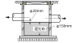

2021年
問題130 排水配管に関する次の記述のうち，最も不適当なものはどれか．
（1）間接排水管の配管長が，1,500mmを超える場合は，悪臭防止のために機器・装置に近接してトラップを設ける．
（2）管径65mmの排水横管の最小勾配は，1/50である．
（3）雨水排水ますの流出管は，流入管よりも管底を10mm程度下げて設置する．
（4）排水立て管のオフセット部の上下600mm以内に，排水横枝管を設けてはならない．
（5）伸頂通気方式の排水横主管の水平曲がりは，排水立て管の底部より3m 以内に設けてはならない．
2021年
問題130 正解（3） 頻出度AAA
円滑な排水のためには20mm程度下げるのが正しい．（2021-130-1図参照）．
雨水排水ますは，雨水の敷地排水管の適所に，点検・清掃のために設ける．
2021-130-1図 雨水ます

-(1) 間接排水管の配管長が，1,500mmを超える場合（2021-130-2図参照）．
2021-130-2図 間接排水管が1,500mmを超える場合
-(2) 排水横管の最小勾配2021-130-1表．
2021-130-1表 排水横管の最小勾配
| 管径［mm］ | 最小勾配 |
| 65以下 | 1/50 |
| 75，100 | 1/100 |
| 125 | 1/150 |
| 150，200，250，300 | 1/200 |
-(4) 配管のオフセット部分では排水の流れが乱れがちとなり，横枝管からの排水の流入を妨げるおそれがあるので，上下600mm以内に横枝管を接続しないようにするとともに，2021-130-3図のように通気を取る．
2021-130-3図 オフセット部の配管・通気
-(5) 伸頂通気方式は，通気立て管を設けず，伸頂通気管のみによる通気方式である．
伸頂通気管とは最上部の排水横管が排水立て管に接続した点よりもさらに上方へ，その排水立て管を，管径を縮小せずに立ち上げ，これを通気管に使用する部分をいう．
通気量の限られる伸頂通気方式では次のような制約がある．
1．排水横主管以降が満流となる場合は，通気量の限られる伸頂通気方式としてはならない．
2．伸頂通気方式の排水立て管には，通気を妨げるのでオフセットを設けてはならない．
3．排水立て管と排水横主管の接続は，円滑な排水のために大曲がりベンド等で接続する．
4．伸頂通気方式の排水横主管の水平曲りは，排水立て管の底部より3m以内には設けてはならない（2021-130-4図）．
2021-130-4図 伸頂通気方式の排水横主管の水平曲り